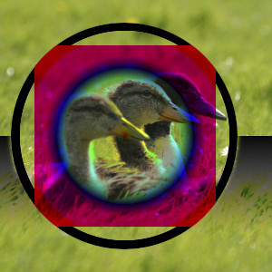
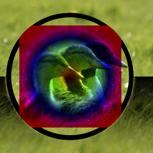
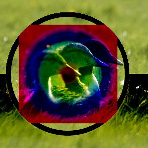

O grupo “Escurecer” contém modos de camada que deixam o resultado mais escuro.
- Somente escurecer
-
Figura 8.19. Exemplo para o modo de camadas “Somente escurecer”

Exemplo para o modo de camadas “Somente escurecer”
O modo compara cada componente de cada pixel na camada superior com o correspondente na camada inferior e usa o menor valor na imagem resultante. Camadas completamente brancas não têm efeito sobre a imagem final e camadas completamente pretas resultam em uma imagem preta.
Este modo é comutativo; não importa a ordem das duas camadas.
- Apenas Escurecer Luma/Luminância
-
Figura 8.20. Exemplo para o modo de camadas “Somente escurecer”

Camada superior em 100% de opacidade usando o modo “Apenas Escurecer Luma/Luminância”.
O modo compara cada componente de cada pixel na camada superior com o correspondente na camada inferior e usa o menor valor na imagem resultante. Camadas completamente brancas não têm efeito sobre a imagem final e camadas completamente pretas resultam em uma imagem preta.
Este modo é comutativo; não importa a ordem das duas camadas.
- Multiplicar
-
Figura 8.21. Exemplo para o modo de camada “Multiplicar”

Exemplo para o modo de camada “Multiplicar”
O modo Multiplicar multiplica os valores dos componentes dos pixels da camada superior com os da camada inferior e então divide o resultado por 255. O resultado é geralmente uma imagem mais escura. Se qualquer camada é branca, a imagem resultante é o mesma que a outra camada (1 * I = I). Se qualquer camada é preto, a imagem resultante é completamente preta (0 * I = 0).
Este modo é comutativo; não importa a ordem das duas camadas.
- Super-exposição
-
Figura 8.22. Exemplo para o modo de camada “Super-exposição”

Camada superior em 100% de opacidade usando o modo “Queimar”.
O modo Super-exposição inverte o valor do pixel da camada inferior, multiplica-o por 256, divide por um mais o valor do pixel da camada superior e, em seguida inverte o resultado. Ele tende a tornar a imagem mais escura, um pouco semelhante ao modo “Multiplicação”.
Na fotografia, a Super-exposição é uma técnica usada em uma câmara escura para aumentar a exposição em áreas específicas da imagem. Isso torna visíveis mais detalhes nas partes claras. Quando utilizado para este fim, a Super-exposição pode funcionar melhor em imagens em tons de cinza e como uma ferramenta de pintura, em vez de um modo de camada.
- Queima Linear
-
Figura 8.23. Exemplo para o modo de camada “Super-exposição”

Camada superior em 100% de opacidade usando o modo “Queima Linear”.
O modo Super-exposição inverte o valor do pixel da camada inferior, multiplica-o por 256, divide por um mais o valor do pixel da camada superior e, em seguida inverte o resultado. Ele tende a tornar a imagem mais escura, um pouco semelhante ao modo “Multiplicação”.